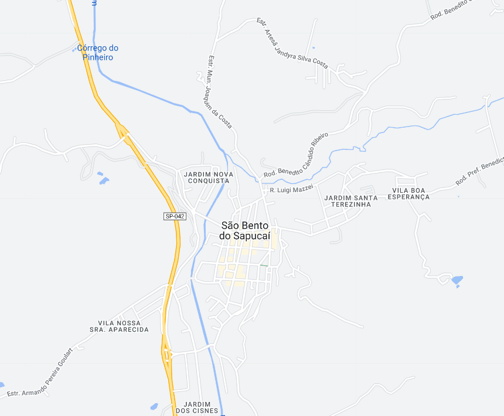

São Bento do Sapucaí - Geodex

Município de São Bento do Sapucaí
-
Populacão: 10.907 pessoas
-
Área: 252,579km²
-
Fundação: 16 de Agosto de 1832
-
Distância da Capital: 186km
São Bento do Sapucaí, localizada na região da Serra da Mantiqueira, é uma estância climática no estado de São Paulo. Com uma área de 252 km², a cidade possui uma população de aproximadamente 10.907 habitantes, divididos entre a zona urbana e rural. Sua história remonta aos tempos do bandeirantismo, quando os paulistas exploravam a região em busca de ouro nas Minas Gerais. José Pereira Alves, fundador da cidade, adquiriu terras na região e doou terrenos para a construção de uma capela dedicada a São Bento. A cidade teve sua elevação a freguesia em 1832, a vila em 1858 e se tornou cidade em 1876. Além de sua rica história, São Bento do Sapucaí é conhecida por seu clima ameno, natureza exuberante e como destino turístico para a prática de esportes de aventura, como voo livre, trilhas e cachoeiras.